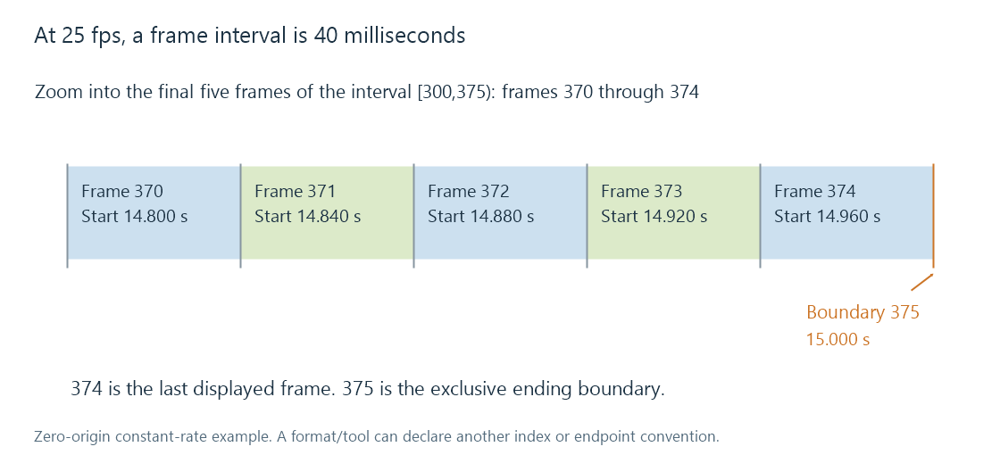

Frame-based subtitle timing
Frame-based subtitle timing maps numbered frames to presentation time using the correct rate, frame origin and boundary convention.
Frame-based subtitle timing identifies positions using frame numbers. Converting those positions to seconds requires the rate associated with that numbering and its origin.
For a zero-origin, constant-rate sequence, frame 0 begins at time zero and frame n begins at n / f seconds, where f is frames per second.

Start and end conventions affect one frame
At 25 fps, frames 300 through 374 occupy time 12.000 through 15.000 seconds. The ending boundary is frame 375.
If an authoring tool instead gives 374 as the last displayed frame, that inclusive index needs one additional frame interval to become an exclusive time endpoint. Confusing the two conventions changes duration by 40 ms at 25 fps.
A format or tool's definition determines which interpretation applies. The article's calculations use zero-origin frame boundaries. They do not redefine every frame-based file's end convention.
Exact fractional rates matter
24000/1001 is approximately 23.976 fps; it is not exactly the rounded decimal 23.976. For 24,000 frame intervals:
| Interpreted rate | Elapsed time |
|---|---|
| 24 fps | 1,000 s |
| 24000/1001 fps | 1,001 s |
After 86,400 intervals, the difference between these two interpretations is 3.6 seconds. A small per-frame difference becomes visible drift across a movie.
Use the declared rational rate where available. A rounded value in a display or filename can be an informal label, not the value to use in a long-duration calculation.
A frame-based timecode label is also a notation with its own counting rules. Drop-frame timecode skips designated labels to keep clock correspondence; the label convention does not itself remove picture frames from playback.
More output frames do not always mean faster playback
There are two distinct operations:
- Playing the same 24 source frames in 1 second at 24 fps, then in 0.96 seconds at 25 fps, changes the programme's speed.
- Converting one second of 24 fps material into 25 output frames while preserving that second changes frame sampling and leaves programme duration intact.
Only the first produces the 24/25 subtitle-time factor for matching source frame positions. In the second, time-based cues can remain on the same elapsed timeline even though output frame indices have changed.
For an Emby file that was converted earlier, identify whether its programme timing changed. The current average frame-rate field alone does not establish the relationship to the subtitle's original frame numbers.
Variable-rate pictures need their timestamps
With variable frame rate, frame intervals are not all equal. Dividing an index by an average rate gives an approximation rather than the actual presentation position.
The useful map is the frame's presentation timestamp on the programme timeline. A frame-based subtitle conversion tied to that sequence needs those actual positions or an appropriate reference time map.
See Also
- MicroDVD subtitles
- Subtitle timing drift
- Video Frame Rate
- Variable Frame Rate
- Fractional Frame Rates: 23.976, 29.97, and 59.94